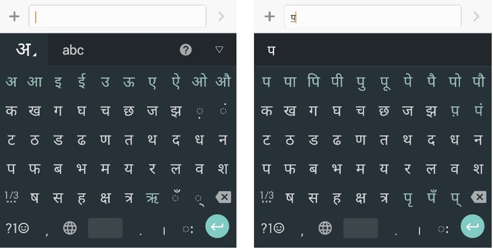

Performance of Accessible Indic Gesture-based Keyboard
Best paper award at Interact 2017 conference in the category of Interaction Design for International Development award.
My Contribution- Qualitative and quantitative research, Experiment design, Usability study, Data analysis
Problem
Text input by the visually impaired using a touchscreen keyboard is slow and laborious. While sighted people in English have published extensive work about text input, comparatively visually impaired people have reported less work about text input. Virtually no research exists on Indic text input on touchscreen devices by the visually impaired. Though several keyboards for Indic languages are available on Android Playstore, few are accessible by the visually impaired. Particularly none of the gesture-based keyboards are accessible.
Introduction to StudyWe developed an accessible prototype of the popular gesture-based, logically organised Hindi keyboard “Swarachakra”. In this paper, we present findings from a two-part study. In the first part, we conducted a qualitative evaluation with 12 visually impaired users on Swarachakra. In the second part we conducted a longitudinal, within-subject empirical study comparing the Swarachakra and Google Indic keyboard. At the end of the two-week long study, 10 participants had spent an average of 4 hours typing, including training and text input tasks. Our study establishes benchmark for text input speeds for Indic scripts by visually impaired users.
Swarachakra Accessible
An accessible version of Swarachakra was presented in We prototyped this version of Swarachakra our study (Fig 4a). This version supports the explore-by-touch interaction, wherein the user can continuously slide his finger over the keyboard to locate the desired key as the screen reader reads out the key under the finger (Fig 4b). As the default Android Google TTS [21] does not provide feedback for some Indic characters, we used e-Speak TTS [20] for voice feedback. If only a consonant is desired,
it is input by the usual lift-to-type interaction, after which the screen reader reads out the input in a second voice. As we want the users to be able to explore the keyboard by touch, Swarachakra Accessible does not display the chakra pop-up on the first touch. The user can activate the chakra pop-up by putting a second finger down anywhere on the screen. The chakra pops up under the second finger (Fig 4c). Thereafter, the user can lift the first finger. To pick one of the glyphs from the popup chakra, user slides the second finger in the direction of the desired vowel modifier (Fig 4d). As he does so, the screen reader reads out the vowel modifier under the finger. If the user has not found the desired vowel modifier yet, he can explore the chakra without lifting the second finger. Chakra can be dismissed without any input with a finger tap, while holding down the second finger
Given its suitable design, we chose Google Indic as the representative of non-gesture based keyboards. It was also the only other Indic keyboard we found that was accessible. Google Indic keyboard is logically organised, i.e. it uses the Devanagari script structure in its layout (Fig 2a). It has five rows of keys. It displays most of the frequently used Devanagari characters on the unshifted layer. Frequent independent vowels and corresponding vowel modifiers are in row 1 of this layer. This row shows independent vowels by default (Fig 2a). The consonants and frequent diacritic marks are in rows 2 to 5 in a layout that closely resembles the Devanagari script structure.
Conclusion
Although there are papers discussing the benchmark data for sighted users in Indic scripts, this is the first study to provide benchmark speeds for text input by visually impaired in Indic scripts through an empirical study. In addition to this, it also provides comparison of gesture-based vs key based input and how gesture based keyboards can significantly increase performance in text input by visually impaired. Even after 10 sessions and about 3 hours of typing practice on each keyboard, there seems to be no evidence of saturation. Future research is needed with more sessions will be required to establish the saturation point.